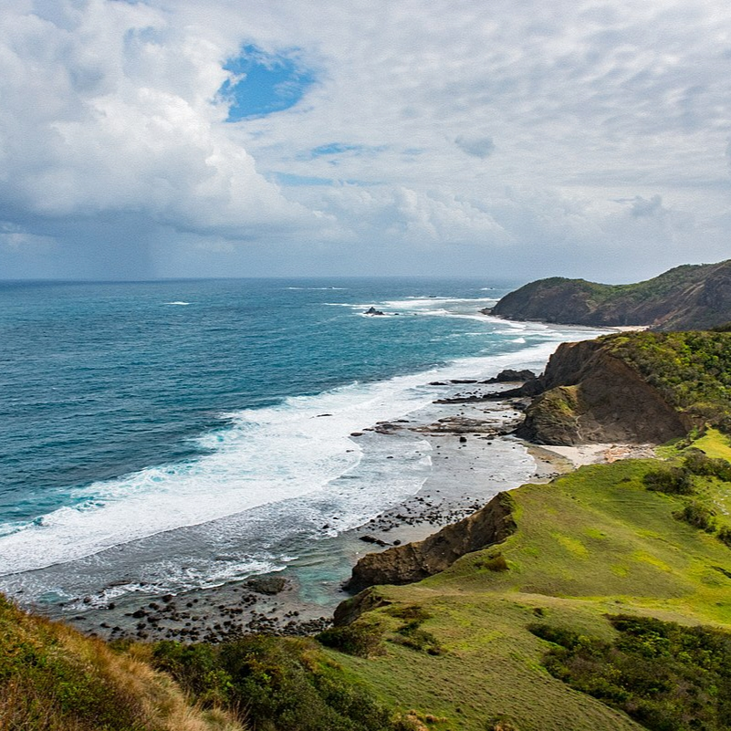
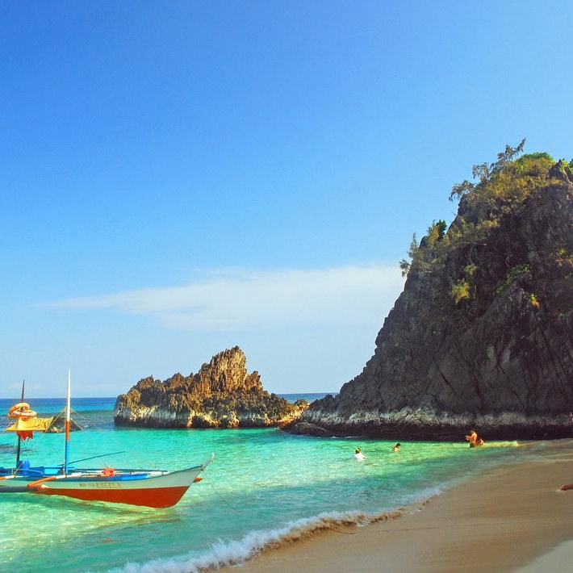
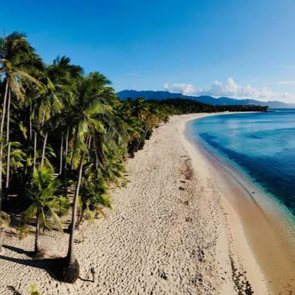

Known as the "Boracay of the North," Anguib Beach boasts powdery white sand, clear turquoise waters, and a tranquil atmosphere perfect for relaxation and water activities.

Palaui Island
A paradise for nature lovers, Palaui Island features lush landscapes, pristine beaches, and rugged trails. It is home to the Cape Engaño Lighthouse, offering breathtaking views.

Sibang Cove, Calayan Island
A hidden gem in the Babuyan Islands, Sibang Cove offers pristine white sands, crystal-clear waters, and a serene ambiance perfect for a tranquil escape.

Sentinela Beach, Claveria
Discover the rugged beauty of Sentinela Beach in Claveria, Cagayan. This hidden gem boasts pristine shores, crystal-clear waters, and dramatic rock formations.